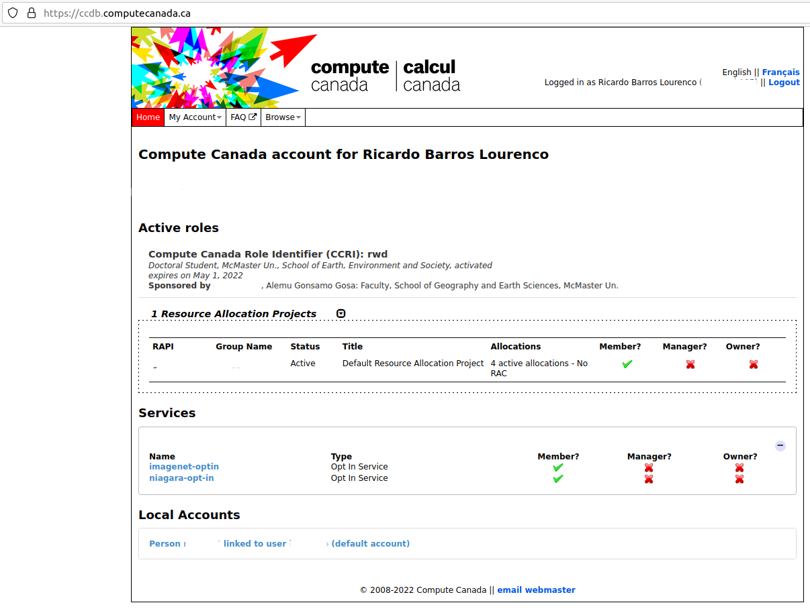
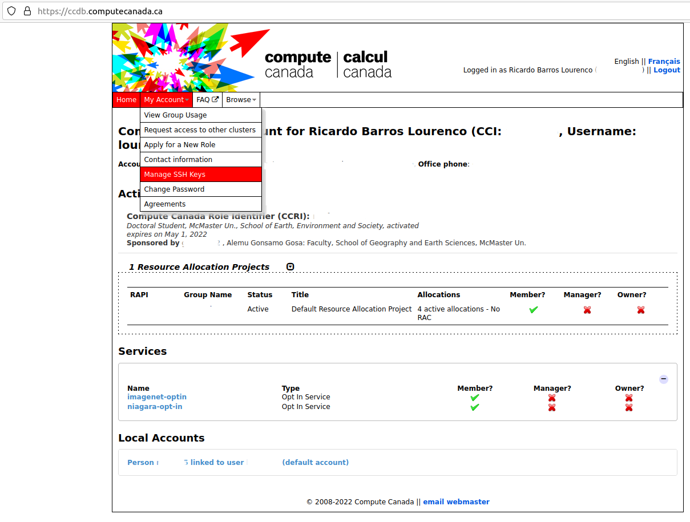
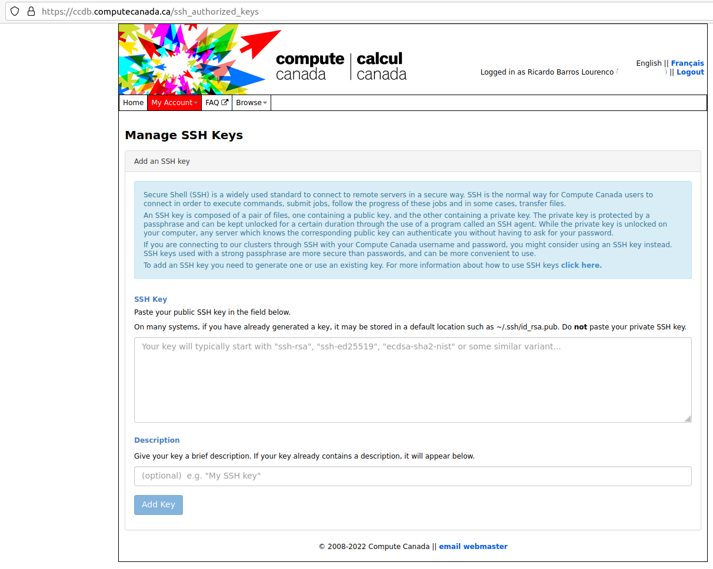

Chapter 3 Compute Canada
Note: This section is under heavy work. For now, please refer to Compute Canada’s Wiki.
3.0.1 Setting up SSH on Compute Canada portal
From January 2022 forward, Compute Canada is enforcing that is mandatory to use a key to use SSH with their premises (ex.: accessing login nodes). For this, you need to create a public-private SSH key, and drop the public key at the Compute Canada user portal, under your account settings.
3.0.1.1 Creating a SSH key
Some description of this is found at the Compute Canada documentation [2] . Is good practice to read it, since it covers some specifics.
To create a SSH key you need to use ssh-keygen. On windows, you can access it through PowerShell, on MacOS using Terminal, and on any Linux distribution via a shell terminal (such as Bash, for example).
In a general way, you can create a new key pair with this command:
$ ssh-keygen -C 'compute canada systems' -f computecanada-key -t rsa -b 4096The parameters refer to:
- -C: A label for the key being generated, useful when you have multiple SSH keys in a machine;
- -f: The name of the key file. Once run, ssh-keygen will output a file with such name without extension which is the private-key, and another file, with a same name, but with extension _*.pub_, corresponding to the public-key.
- -t: Represents the choice of encrypting scheme, which on this case is a RSA one, with 4096 bits as the key size.
Once you hit the command, you should have on the folder you are running these two files: - computecanada-key (without file extension): corresponds to the private key; - computecanada-key.pub: corresponds to the public key.
WARNING: The private key is equal to a regular password to the system you are using it to access. Therefore, it is recommended that you assign a key password (it will be requested when you are generating the key), to assure that if such key is lost/copied/etc, nobody would be able to access this system impersonating you. A series of good practices for ssh keys may be found at this post.
3.0.2 Depositing the public key on Compute Canada
Once created the key pair, you need to deposit the public key on your Compute Canada account. A main tutorial is provided here but you can proceed as follows:
Login at your Compute Canada account, you should see a screen as such:
Figure 3.1: Landing page of your Compute Canada account
Enter in the My Account tab, then click Manage SSH Keys:
Figure 3.2: Manage SSH Keys menu
Then you should have the SSH Key management options:
Figure 3.3: SSH Key Management options
Now insert the content of your SSH public key in the first field. To do so, you need to open your .pub file with a simple text editor (ex.: Notepad on Windows, TextEdit on MacOS, Gedit/Vi/Emacs on Linux - Do not open with text processing software, as MS Word!) select all content and copy-paste into the first text box.
Then you should assign a Description to such key. I recommend that you use different keys for every system you use to connect to Compute Canada Systems, and this field should reflect each of these systems. For example, a description as such “Desktop Machine at the Laboratory”, or “Personal Laptop” would be enough to identify where these keys lie (especially important if you get hacked and someone steals your key).
Then hit Add Key. This operation will put your public key on every machine of Compute Canada, and may take up to 30 minutes to be online.
3.0.3 Accessing a Compute Canada login node
Once your public key is loaded and synchronized in all machines, you may login a compute node using a terminal (On Windows, you need to use PowerShell; on MacOS, Terminal; and on Linux, your preferred Shell, such as Bash):
$ ssh -i ./computecanada-key your-compute-canada-username@MMMMMM.computecanada.caThe command opens a SSH terminal session with the following parameters:
- -i : The path and the name of your Private Key;
- your-compute-canada-username : The username you have set for your Compute Canada account, when registering with them for an account;
- MMMMMM : One of the Compute Canada clusters (for example, Cedar, Graham, or Beluga)
Note: We will provide a more extensive list of computing environments later, but for now you may want to refer to this presentation.
3.0.4 Running batch jobs
If you want to run a R-language batch job, please take a look on the CCrecipes repository.
More specifically at the slurm/R/r_batch_standalone.sh file, we have:
#!/bin/bash
### Sets shell for parallel program (no distribution - no MPI)
### Inspired by the current documentation available on CC Wiki.
#SBATCH --account=def-someacct # replace this with your PI account
#SBATCH --nodes=1 # number of node MUST be 1
#SBATCH --cpus-per-task=4 # number of processes
#SBATCH --mem-per-cpu=2048M # memory; default unit is megabytes
#SBATCH --time=0-00:15 # time (DD-HH:MM)
#SBATCH --mail-user=yourname@someplace.com # Send email updates to you or someone else
#SBATCH --mail-type=ALL # send an email in all cases (job started, job ended, job aborted)
### Load library modules
module load gcc/9.3.0 r/4.0.2
### Load r-packages (builds locally) - comment, if unecessary to install new libraries
#R install_script.R
### Export locally installed packages
# TODO: check if this path holds
export R_LIBS=~/local/R_libs/
### Run main_job.R - or any batch script necessary
R CMD BATCH --no-save --no-restore ~/main_job.RSome requirements:
- The R file
main_job.Rneeds to be at the root of your user folder. - Also the script needs to be executable (command runned at the same folder
as
r_batch_standalone.sh:
$ chmod +x r_batch_standalone.sh- Finally, you can submit this batch job as:
$ sbatch r_batch_standalone.shOnce submitted, you should receive a job number at the console. Once its status change at the scheduler (job started, job ended, job aborted), you should receive an e-mail.
If getting into running issues, take a look on the errors by inspecting the
output files which will be saved at the same folder you submitted the job and
have the name slurm-xxxxxx.out in which xxxxxx is the job number.